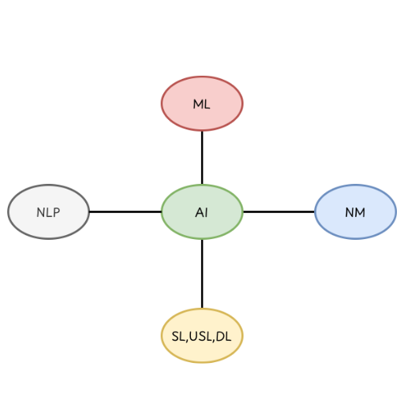
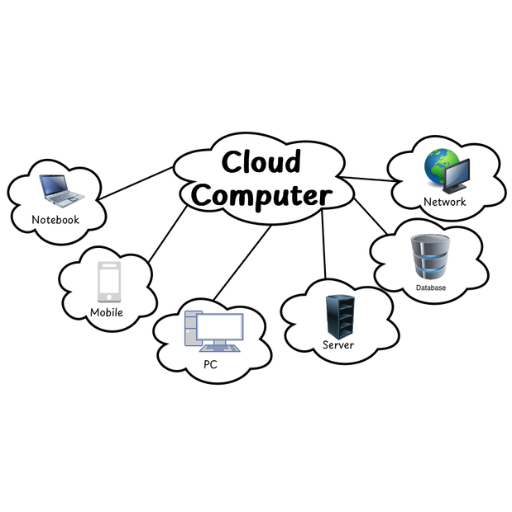

Concept of AI
- The term artificial intelligence(AI) was coined in 1956 by John McCarthy. According to him “The science and engineering of making intelligent machines, especially intelligent computer programs is called AI ”.
-
It is the intelligence displayed by the machines in contrast to the natural intelligence displayed by the humans.

Fig:-Branches of AI
Components of AI
-
The major components of AI are listed below.
-
Learning
- Learning is the process of converting experience into expertise or knowledge.
- AI learning can be categorized into two types.
- Supervised learning:- It involves building a machine, which can learn the model based on the labelled samples or examples. Such as face recognition, speech recognition etc.
- Un-Supervised learning:- In this type of learning there is no labelled data trained to machines. It is based on the algorithm to find the structure of underlying data to discover the hidden patterns.
- Used in clustering or making groups, recommender systems etc.
-
Reasoning
- AI reasoning refers to deriving the new information from existing information using different rules and principles provided to it.
- AI systems use reasoning to make inferences, draw conclusions and solve problems. The main aim of reasoning is to create machines that can reason like humans using logic & common sense.
-
Problem Solving
- It refers to the ability to find out the solution of the problem by researching, performing the logical algorithm and by using the differential equations.
-
Perception
- It is the process in which the different perceivers are used to analyze the different objects, extract features and analyze the relationship between various components of the environment.
- Autonomous driving is an example of how AI implements perception.
-
Neural Network
- Neural networks are a type of machine learning process in artificial intelligence (AI) that teaches computers how to process data based on the human brain.
- Neural networks are made up of interconnected nodes, or neurons, in a layered structure that resembles the human brain.
-
Applications of AI
-
AI is used in various fields some of the most popular fields are:-
-
Games playing
- AI plays a crucial role in strategic games such as chess, poker. AI provides different logical tricks and logical thinking while playing games.
-
NLP
- By using AI, it is possible to interact with computers that understand the natural language spoken by humans. Examples: OK google, Cortona, Alexa, Siri etc..
-
Robotics
- AI is used to develop the different types of robots. Different sectors like aviation, education, health, manufacturing etc. robots are used which is only possible due to AI.
-
Image Processing
- It is the process of using algorithms to analyze images and extract useful information from them.
- It involves transforming an image into a digital form and performing different operations on it.
- The output of image processing is either the image itself, or its characteristics or features.
-
Expert System
- An expert system is a computer program that is designed to solve complex problems and to provide decision-making ability like a human.
- It solves complex issues as an expert by extracting knowledge stored in its knowledge base.
- Pattern Recognition, Vision System, Music System etc.
-
Robotics
- Robotics is the branch of engineering science that involves the design, construction and operation of robots. It integrates knowledge from mechanical engineering, electrical engineering and computer science.
- Robots are the reprogrammable multifunctional automated machines that can execute specific tasks with little or no human intervention.
- These can be used in various fields like industries, medical, services, space, military and defense, agricultural etc.
- A robot has following essential characteristics:
- Sensing:- Robots use sensors to collect information from their environment. Sensors can detect light, heat, distance, sound, pressure, movement, or touch.
- Movement:- Robots have actuators or motors that allow them to move. The type of movement depends on the robot’s design—wheels, legs, tracks, or robotic arms.
- Energy:- Every robot needs a power source to operate its components. Power can come from electricity, batteries, and solar energy.
- Intelligence:- Intelligence is the “brain” of the robot—implemented through programming, algorithms, or AI. It allows the robot to make decisions, adapt to changes, and respond to its environment.
Cloud Computing
- The term cloud computing simply refers to the internet-based computing, which provides various services such as software development, storage of file and application, networking on the remote server etc.
-
With the help of cloud computing users can access all the required data and resources via the internet and users can work remotely.

Fig: Cloud Computing -
Types of Cloud Computing
-
On the basis of Deployment model
-
Public Cloud
- The cloud which is accessible to the general public is simply called a public cloud.
- In public cloud resources are managed or operated by third parties, meaning the cloud service provider itself.
- Examples include Google Drive, Gmail, YouTube, One-Drive etc.
-
Private Cloud
- It is dedicated to a single organization or company and the private clouds offer more security but may require higher cost.
- Examples: Banks Internal Cloud, University internal cloud etc.
-
Hybrid Cloud
- It is a combination of private and public clouds that work together, allowing data and applications to move between them. This gives organizations more flexibility, scalability, and cost efficiency.
- Example Hospital uses both public and private cloud
-
-
On the basis of Service model
-
SaaS(Software as a Service)
- In this service model, there is no need to install the application on the user's computer.
- The users can directly use the software provided by the service provider on the internet.
- Examples: MS office 365, ZOOM, Netflix, Spotify etc.
-
IaaS(Infrastructure as a Service)
- The cloud service model that provides virtualized computing resources or infrastructures over the internet.
- AWS, Azure are the best examples of IaaS. These provide different infrastructures like virtual server, storage, and different networking services so that the user can manage their own server rather than the overhead of maintaining a physical server.
-
PaaS(Platform as a Service)
- The service model of cloud computing provides a platform and environment for developers to build and deploy applications.
- The service model of cloud computing provides a platform and environment for developers to build and deploy applications.
- Google App Engine is the best example of PaaS service. Here developers can write codes in popular programming languages like python, java etc. without installing the compiler on the computer.
- Similarly, Heroku is a platform as a service (PaaS) that enables developers to build, run, and operate applications entirely in the cloud.
Advantages of Cloud computing
- Cost Efficient
- Unlimited Storage
- Backup and Recovery
- Easy access to information
- Improved Collaboration
Disadvantages of Cloud computing
- Technical Issues
- Risk of data loss
- Limited Control and Customization
- Dependency on Service Provider
-
-
Big data
- Big Data refers to the vast and complex sets of data that are too large and diverse for traditional data processing and analysis methods to handle effectively.
- This data typically involves massive volumes of information, coming from the various sources and are present in the different formats.
-
To process and extract the information from the big data, specialized tools are required.
Hadoop for data storage and management
Apache Spark for data processing and analysis
Tableau, Power BI for data visualization.
Characteristics of Big Data
-
It can be characterized by five Vs.
- Volume:- Big data involves large amounts of data often ranging from terabyte to petabytes or even exabytes.
- Velocity:- It refers to how quickly data is generated and how quickly that data moves. It is an important aspect for companies that need data flow quickly, so that at the right time they can analyze the data and make decisions.
- Variety:- Big data is diverse in nature. It can include structured data (data stored in a database), semi-structured data(JSON, XML) and un-structured data(Text Files, Images, Videos.)
- Veracity:- Big data may not always be accurate or trustworthy. So veracity overall refers to the level of trust in the collected data.
- Value:- The primary goal of big data analysis is to extract meaningful information and value from the data
Application of Big Data
-
Recommendation:
- By tracking the users search activities and spending habits the popular online e-commerce websites use big data for recommendation.
-
Smart Traffic System:
- By using different cameras implemented beside the roads are used to track the traffic.
-
Health-Care:
- To keep the different records of patients and different medical research.
-
Business Analytics:
- It is used by business analysts to analyze the different customer behaviors.
-
Government & Public Policy:
- The government uses big data for surveillance, crime analysis and disaster response.
-
Social media & online advertising
-
Environment Monitoring
Advantages of Big Data
- Improves decision-making through data analysis
- Handle & process large volume of data efficiently
- Provides real-time insights
- Helps in predicting future trends
- Enhances business performance and productivity
Disadvantages of Big Data:
- High cost of storage and processing
- Data security and privacy issues
- Requires skilled professionals
- Complexity in managing large datasets
- Data quality and accuracy problems
Virtual Reality
- It is a technology that allows users to immerse themselves in a computer generated simulated environment.
- It creates an illusion of the real world so that users can feel they are present in the real world.
- Virtual reality is typically achieved through the use of specialized hardware and software devices like head mounted display(HMD), motion tracking devices and different dimensions of audios like 3D,4D,8D etc.
Applications of Virtual Reality
-
Healthcare:
- It can be used in medical studies so that students can know the different parts of the human body, practice procedures and surgeries.
-
Scientific Research:
- It is used in scientific research and laboratories so that scientists can easily research molecular, biology and chemistry.
-
Entertainment:
- VR is used in different entertainment sectors like Gaming, Cinema and film and live events and concerts etc.
-
Military Training:
- Used in military training for soldiers to get familiar with weapons and battle ground areas.
-
Pilot Training:
- Used to train pilots. So that without any physical damage they can complete their
Mobile Computing
- Mobile computing can be defined as the technology that focuses on the use of mobile devices and wireless computing devices that allows users to access and utilize the digital information and services while on the move.
- Here the term mobile devices refers to the small and portable devices that can support wireless connection. These devices include PCs, Tablets, Palmtops, Mobile phones etc.
Applications of Mobile computing
-
Communication:
- Mobile computing devices, primarily smart phones, are used for voice, video calls, texting and instant messaging.
-
Internet Access:
- Mobile devices provide on the go internet access through the cellular data connection and Wi-Fi networks that allows users to browse websites, check email and access cloud based services.
-
Social Media:
- Social media apps on mobile devices allow users to share and update photos and videos as well as interact with friends.
-
Navigation and Location services:
- Mobile computing provides GPS technology which allows users to navigate the location and accurate direction based on the services.
-
Mobile banking and payments
-
E-Commerce
E-Commerce(E-Business)
- The term E-Commerce is the short form Electronic Commerce, which refers to the buying and selling of goods and services over the internet or by using the ICT.
-
It is becoming popular day by day due to the advancements in technology.
Classification of e-commerce
-
B2B(Business to Business):
In B2B commerce the one business team or company sells the product and services to another business company. It is related to the bulk purchase, wholesale transaction. -
B2C(Business to Consumer):
In B2C, the services and goods are sold directly to the consumer. Examples: Amazon, daraz etc.. -
C2C(Customer to Consumer):
This e-commerce involves individuals selling products or services to other individuals like ebay.com -
C2B(Consumer to Business):
In e-commerce, the consumer offers products or services to businesses. Freelancing platforms, influencer marketing etc. are the examples of C2B.
-
Application of E-Commerce
-
Online retail:
- Online retailers like amazon, Alibaba, daraz etc. enables consumers to browse and purchase a wide range of products online.
-
Buying and Selling of Digital Products:
- E-Commerce facilitates the sales of digital products such as e-books, software, music, movies and online courses directly to consumers over the internet.
-
Online Marketplace:
- It creates a marketplace for buyer and seller and brings them together.
-
Food Delivery:
- It helps to grow the food industry with the help of different apps.
-
Health-Care:
- Patients can schedule appointments, order, medication through e-commerce platforms.
E-Governance(Electronic Governance)
- It can be defined as the use of information and communication technologies provided by the government, to enhance the range and quality of information and service provided to citizens.
- The main purpose of this e-governance is to make the government process more transparent and accessible between the government and the citizens.
Applications of e-governance
-
Online service:
- E-Governance enables citizens to access government services and information online. It includes different services like license renewal, paying tax, etc.
-
Digital Identity:
- It provides digital identity to the citizens like smart driving license cards, digital voting cards etc.
-
Public Engagement:
- Different social media and online platforms are used to engage citizens in policy discussion and decision making processes.
-
E-Education:
- In the education sector e-governance supports online learning platforms, digital classrooms, remote education etc.
-
Security and Privacy:
- E-Governance helps to secure the data of the public by implementing various data privacy and cybersecurity rules.
E-Medicine
- E-medicine refers to the use of digital technologies and the internet to deliver health care services, medical information, and patient care remotely. It includes telemedicine, Electronic Health Records (EHRs), and mobile health apps.
Application of E-Medicine
-
Teleconsultation:
- Remote diagnosis and treatments through video calls.
-
E-Prescription:
- Doctors send prescriptions electronically to pharmacies.
-
Health Monitoring:
- Wearable devices track heart rate, blood pressure, etc.
-
Electronic Health Records(EHRs):
- Store and share patients' data digitally.
-
Medical Educating & Training:
- Online learning for healthcare professionals.
-
Remote Surgery:
- Use of robotics and internet technologies for operations.
E-education
- E-education(Electronic Education) refers to use of digital technologies, electronic devices and internet connectivity to provide access to education and learning resources.
- It includes online classes, digital libraries, e-learning platforms, and virtual classrooms that makes education accessible anytime and anywhere.
Present Condition of E-education in Nepal
-
Growth after COVID-19:
- The pandemic accelerated the adoption of online classes using tools like Zoom, Google classroom, and Microsoft Teams.
-
Urban vs Rural Gap:
- E-education is more developed in urban areas; rural regions still face issues like poor internet connectivity and lack of digital devices.
-
Government Effort:
- Initiatives such as sikai chautari, E-paath, and E-Pustakalay promote digital learning.
-
Private Sector:
- Schools, Colleges, and ed-tech startups are investing in e-learning platforms and digital resources.
-
Challenges:
- Limited infrastructure, digital literacy, and unstable electricity remain major barriers.
IoT(Internet of Things)
- IoT simply refers to a network of physical objects or things that are embedded with software, sensors and other technologies to connect and exchange data with other devices and systems over the internet.
- The major goal of IoT is to enable these objects to collect the data, share the data and make intelligent decisions.
- for example smart lighting, smart thermostats, smart-watch, traffic management etc.
Advantages of IoT
-
Efficiency and Automation
- IOT enables automation of various tasks and processes, it reduces human intervention.
- For example thermostats can adjust temperature setting according to room temperature.
-
Data collection and Analysis
- IoT devices generate large amounts of data that can be analyzed to gain valuable insights.
-
Enhance safety and security
- IoT can improve safety by monitoring critical systems and responding to emergencies automatically. For example, smoke detectors can alert home owners and emergency services.
-
Environmental Benefits
- It can reduce waste and environmental impact by optimizing the resources used. For example smart agriculture can optimize irrigation and reduce water consumption.
-
Innovate new business model
- IoT supports improving decision making and increases the value and new ideas in business.
Disadvantages of IoT
- Security and privacy risk
- Complexity
- High cost